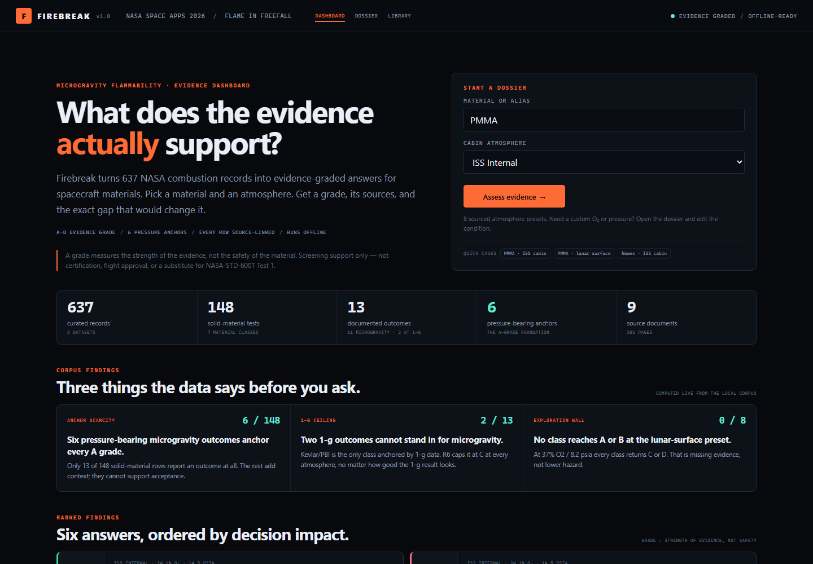

NASA Space Apps 2026 · Flame in Freefall
Firebreak: evidence-graded flammability screening for spacecraft materials
Abstract
Spacecraft material flammability decisions depend on evidence that is scattered across decades of drop-tower, sounding-rocket, and ISS experiments. The same material can appear acceptable under one oxygen concentration and fail under another, and the difference is rarely recorded in a form a designer can act on. Firebreak is a deterministic screening system that converts a curated corpus of NASA microgravity combustion records into source-linked evidence grades, explicit evidence gaps, and a ranked next test.
We curated 637 records — including 148 solid-material test rows — and 501 pages from nine public NASA documents, implemented a ten-rule evidence engine (R1–R10), and evaluated it against 13 documented outcomes (11 in microgravity, 2 at one gravity) and 6 pressure-bearing microgravity anchors. Retrieval finds all five held-out targets within its top three results with zero false matches; the severity model reaches AUC 0.834 against a 0.607 oxygen-only baseline. Under the engine, none of eight material classes reaches grade A or B for lunar-surface use — the honest result, given that the public record contains almost no low-pressure microgravity data. The full system runs offline on a laptop, and it is a screening aid, not a substitute for NASA-STD-6001 Test 1.


Why an evidence grade, and not a pass/fail answer
NASA-STD-6001 Test 1 asks whether a material sustains upward flame spread in a specified oxygen–nitrogen atmosphere. The answer is a single number — the limiting oxygen concentration — but the number is only as good as the test behind it, and the test environment matters. Microgravity removes buoyant flow; a material that self-extinguishes in a 1-g chamber can keep burning in a spacecraft cabin at the same oxygen fraction. Public data reflects this unevenly: some materials have been flown repeatedly, others appear only in ambient-pressure screening, and most have never been tested at the low total pressures relevant to lunar-surface habitats.
The BASS-II results make the gap concrete. A polymethyl methacrylate (PMMA) sample extinguished at 16 percent oxygen in 1-g testing, yet steady microgravity flame spread was observed at 13.6 percent oxygen on orbit. Treating the 1-g result as a design limit would have overestimated the margin by a wide factor.
“PMMA 1-g blowoff at 16 percent O2 versus steady microgravity spread at 13.6 percent O2: negative oxygen margin of safety 2.4 percent.”
BASS-II summary report · NASA/TM-20210011385
A screening system therefore has to answer three questions at once: what evidence exists for this material, how strong is that evidence for the intended environment, and what test would most improve the answer. Firebreak is built around that triple. It does not return a pass or fail; it returns a grade, a verdict, and the specific gap that keeps the grade where it is.
System
Firebreak has five components. Retrieval finds relevant records for a material and environment; coverage separates what the corpus can support from what it cannot; the severity model predicts whether a record documents meaningful CO2 rise in BASS-II data; the rule engine assigns the grade; and an explanation layer renders the reasoning in plain language. Every grade is traceable to the records that produced it.
| Component | Implementation | Measured output |
|---|---|---|
| Retrieve | TF-IDF over normalized material, environment, and outcome fields | recall@3 1.00 · false-match 0.00 |
| Coverage | Environment-aware matching across gravity, pressure, and oxygen | 5 / 5 held-out targets found |
| Severity | Gradient-boosted classifier on BASS-II sample features | AUC 0.834 vs 0.607 O2-only |
| Grade | Ten deterministic rules R1–R10 over evidence strength | A–D, verdict, blocking gap |
| Explain | Templates over the rule trace and cited records | 30-row audit, 60/60 fields correct |
The engine is deterministic: identical inputs produce identical grades, and no grade is generated by a language model. The severity classifier is the only learned component, and it is scoped to a single outcome variable — whether a BASS-II record shows a CO2 rise above 0.5 percentage points. It does not predict ignition, flame spread, or limiting oxygen concentration.
Results
Table 2 applies the engine to seven representative material–environment pairs. The pattern is consistent: microgravity evidence supports actionable grades for materials that have flown, and it is absent for the environments that matter most for lunar-surface operations.
| Material | Environment | Grade | Verdict | Basis |
|---|---|---|---|---|
| PMMA | ISS cabin · 24.1% O2 | A | High risk | BASS-II; spread at 20.7% O2 |
| SIBAL | ISS cabin · 24.1% O2 | A | High risk | Microgravity spread observed |
| Nomex | ISS cabin · 24.1% O2 | B | Test needed | Microgravity data; coverage partial |
| Silicone | ISS cabin · 24.1% O2 | B | Test needed | Microgravity data; coverage partial |
| PMMA | Lunar · 37% O2 / 8.2 psia | C | Insufficient evidence | No low-pressure microgravity record |
| Kevlar / PBI | Lunar · 37% O2 / 8.2 psia | C | Insufficient evidence | 1-g data only (TB 26-05); capped at C |
| Nylon webbing | ISS cabin · 24.1% O2 | D | Insufficient evidence | No retrievable record |
| Measure | Value | Note |
|---|---|---|
| Curated records | 637 | 8 PSI datasets and derived test tables |
| Solid-material test rows | 148 | Across 7 material classes |
| Documented outcomes | 13 | 11 microgravity · 2 at 1-g |
| Pressure-bearing microgravity anchors | 6 | Usable for low-pressure reasoning |
| Source documents | 9 | 501 pages, all public |
Table 4 extends the assessment to all eight material classes at the three application presets. The lunar-surface column is uniformly C or D: no class has the pressure-bearing microgravity evidence that a higher grade would require. That column is the gap the system exists to make visible, and the reason the ranked next test matters more than the grade itself.
| Material class | ISS cabin24.1% O2 · 14.7 psia | Airlock / Gateway30% O2 · 10.2 psia | Lunar surface37% O2 · 8.2 psia |
|---|---|---|---|
| PMMA | A | C | C |
| SIBAL | A | C | C |
| Nomex | B | C | C |
| Silicone | B | C | C |
| Kevlar / PBI | C | C | C |
| PMMA / Nomex layup | C | C | C |
| Unidentified | C | C | C |
| Nylon webbing | D | D | D |
Limitations
The system is deliberately conservative, and several of its limits are structural rather than temporary.
-
Microgravity anchors are scarce.
Six pressure-bearing anchors support the entire low-pressure reasoning layer. More anchors would change grades; no amount of modeling substitutes for them.
-
One-gravity evidence caps at grade C.
Rule R6 prohibits a 1-g result from supporting a grade above C, because buoyancy changes the flame-spread threshold. This affects the Kevlar/PBI layup data from TB 26-05 and any ambient-pressure screening in the corpus.
-
The severity model is narrow by design.
It predicts only whether a BASS-II record shows a CO2 rise above 0.5 percentage points, for material classes seen in training. It is not an ignition model, a flame-spread model, or a limiting-oxygen-concentration predictor.
-
Composite layups cannot exceed grade C.
Rule R8 caps layups at C because the corpus records them as assemblies, not as characterized constituents. A layup's grade reflects the assembly evidence, not its best constituent.
-
This is not certification.
Firebreak is screening support. It does not certify a material, approve a flight configuration, or substitute for NASA-STD-6001 Test 1. MAPTIS and all authentication-gated sources are excluded; every record in the corpus is public and cited.
Reproducibility
The full system runs offline. It requires Python 3.11 and no external services; the corpus, models, and web application are all local. The evaluation suite covers retrieval, coverage, severity, rules, and the explanation audit.
python -m venv .venv
source .venv/bin/activate # Windows: .venv\Scripts\activate
pip install -r requirements.txt
uvicorn app.main:app --port 8010
pytest -q # 48 passedOn the held-out set, retrieval recall@3 is 1.00 with zero false matches; coverage identifies 5/5 targets; the severity model reaches AUC 0.834 against a 0.607 oxygen-only baseline; and the explanation audit checks 60/60 fields across 30 rows. The rule engine and explanation layer are deterministic and covered by unit tests.
Data, code, and citation
The corpus is assembled from public NASA sources: the Physical Sciences Informatics system, NASA Technical Reports Server documents including the BASS-II summary report and TB 26-05, and NASA standards JSC 29353D and NASA-STD-6001B. Each record retains its source identifier and page reference, and the repository includes the ingestion scripts that rebuild the SQLite corpus from the raw documents. Full citations are in docs/sources.md.
Code is released under the MIT license at github.com/DiyonGamage/firebreak. This page is served from the same repository.
@misc{firebreak2026,
title = {Firebreak: evidence-graded flammability screening for spacecraft materials},
author = {{Team LFR}},
year = {2026},
note = {NASA Space Apps Challenge 2026, Kandy, Sri Lanka},
url = {https://github.com/DiyonGamage/firebreak}
}